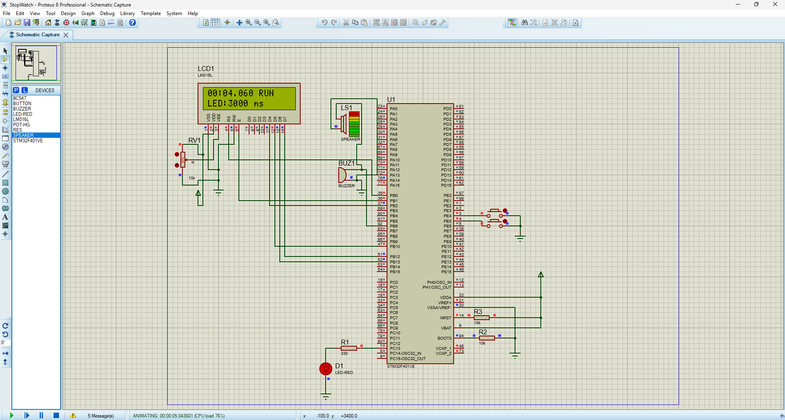
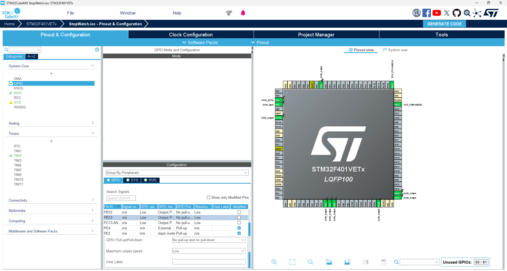

Timer-driven stopwatch
TIM2 creates a 1 ms timebase and increments the stopwatch only while the system is running.
Register-level embedded project
A premium frontend showcase for a real STM32F401VETx stopwatch project, with a browser-based simulator that visualizes TIM2 timing, EXTI button control, GPIO outputs, LCD refresh, LED blinking, and buzzer events.
Project overview
The original firmware runs on an STM32F401VETx and avoids HAL calls in the main behavior. This web interface makes the embedded logic easier to present by turning the circuit into an interactive visual product page.
TIM2 creates a 1 ms timebase and increments the stopwatch only while the system is running.
PE4 is mapped to EXTI4 so the Start/Pause action behaves like the physical button in Proteus.
The LCD, LED, and buzzer are represented with visual state changes, pulses, and event logs.
No backend, no database, and no deployment complexity. The demo is static HTML, CSS, and JavaScript.
Block diagram
Technologies used
How it works
HSI runs the system at 16 MHz so timing stays predictable in Proteus.
The timer generates a 1 ms event and updates `stopwatch_ms` only when running.
EXTI4 toggles Start/Pause, while PE5 cycles the LED delay values.
The LCD refresh, LED blink, and even-second buzzer pulse are handled outside the timer ISR.
Interactive simulation
Use the simulator like the real circuit. Start the stopwatch, change LED speed, enable sound, and watch the peripheral state update live.
Gallery

Complete circuit wiring with LCD, buttons, LED, buzzer, reset and boot support.

The LCD displays elapsed time and current LED delay while the circuit is animated.

Pinout setup for PE4, PE5, PC13, PB6, LCD pins, and TIM2.
Open source project